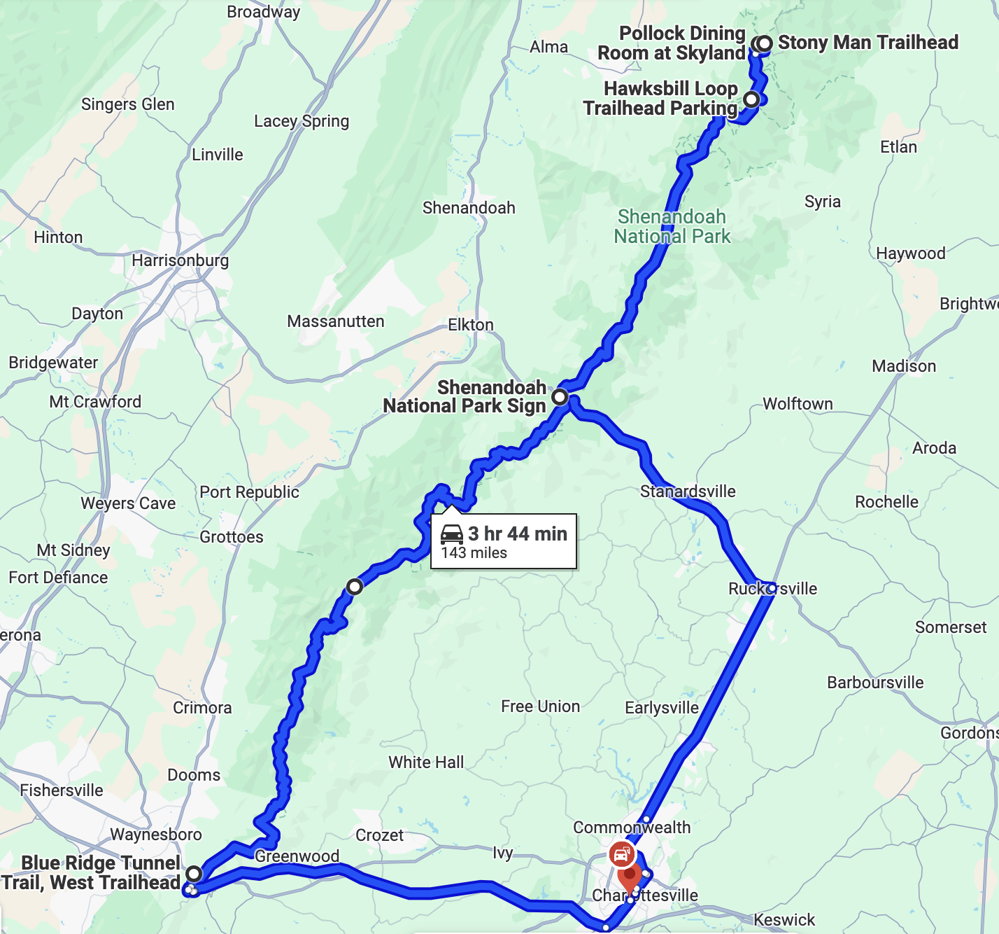
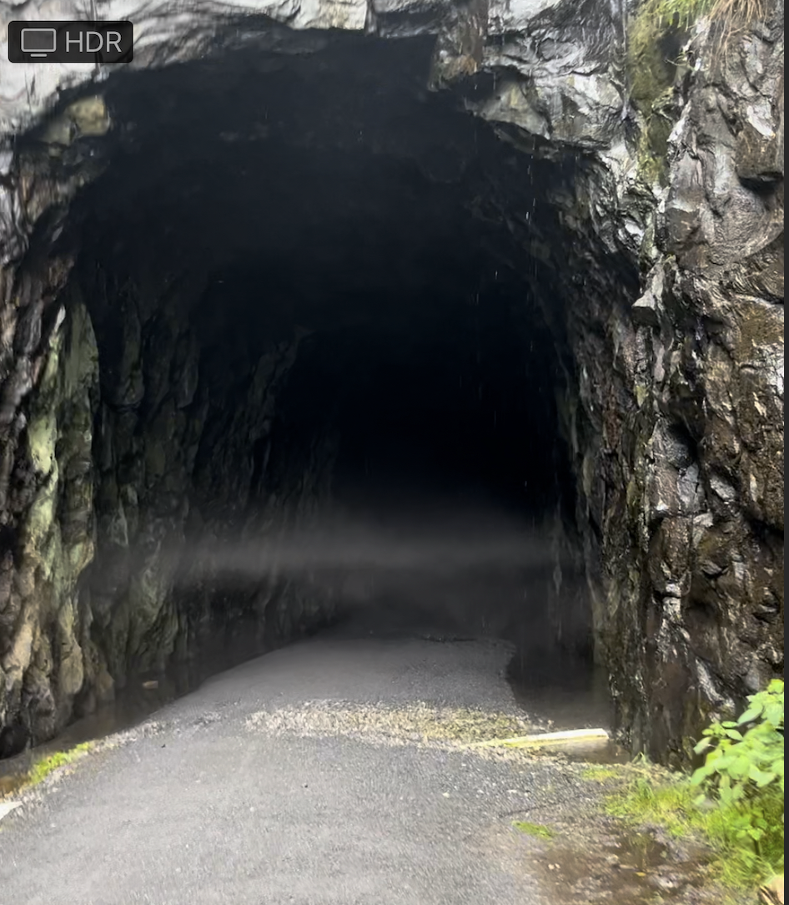

My Shenandoah National Park Itinerary
Over the summer (in June) I visited Shenandoah National Park with my family. We were staying at a hotel in Charlottesville, VA. I think I did a good job with planning our itinerary, and I thought the other itineraries I found online were not very good, so I am posting mine on this blog.
Here is a map of the itinerary:

Google Maps says it is 3 hours and 44 minutes, but don’t be scared, you can likely go a bit faster (wink, wink), and most of the driving time is on Skyline Drive, the road that runs the length of Shenandoah National Park. The road itself is a famous attraction at the park, so the driving is a feature, not a bug.
I planned my itinerary around my family, who are in decent shape. They like hiking, but need some motivation like a view or something cool to look at to make it worthwhile. They also like somewhat frequent breaks from driving. In addition to the big stops, we briefly stopped at a few random overlooks along Skyline Drive.
Here’s a rundown of the itinerary:
1. Enter through Swift Run Gap Station
From Charlottesville, this is the closest park entrance. If you like taking photos with National Park signs, this is the place.
2. Hike Stony Man Mountain
This is 1.5 miles of distance/320 feet of elevation. This mountain has a cool view, and the hike from the parking lot overlaps with the Appalachian Trail, so you get to see Appalachian Trail through-hikers here, another cool sight at the park.
3. Get Blackberry Pie at Pollock Dining Room
I chose Stony Man Mountain because you can walk to the Pollock Dining Room and get blackberry ice cream after hiking. The blackberry ice cream pie is really good and absolutely worth getting.

4. Climb Hawksbill Mountain
This hike is 1.6 miles and 660 feet of elevation. If this is too much, there is a nearby mountain called Bearfence Mountain that is a bit easier. This mountain also has a really great view. Shenandoah is one of the only parks I have been to where the pictures you take at summits look cooler than they felt at the moment (it’s generally the other way around).

5. Picnic Lunch at Lewis Mountain Picnic Area
We brought sandwiches and ate them while driving down Skyline drive. We chose the Lewis Mountain Picnic area which was pretty nice, though all the campsites looked nice for lunch and I don’t think this is an important choice. They had a water fountain carved into a rock! (unfortunately not working)

6. Crozet Blue Ridge Tunnel
The Blue Ridge Tunnel is my personal highlight of the visit. I am very surprised it exists and I think it should be more well known. It is an approximately 1 mile long railroad tunnel built in the 1850s. It was abandoned at some point, and is now a multiuse trail for biking/walking. The entrance is not inside Shenandoah National Park, but it does run under the park. It is a 2-mile walk one way. The best way to do it is to have one person drop you off at the West End Parking lot, have them drive over to the East Parking lot, and meet up somewhere in the middle of the tunnel so nobody has to go back and forth through the tunnel. It takes about 25 minutes to walk through the tunnel, and it is pitch black inside. You need flashlights (fully charged phones worked for us). It is very creepy and damp and drippy, though the temperature is nice when it is hot. I felt pretty weird after doing it, but it is one of the most unique hikes I have ever done. Here is a photo of fog abruptly starting at the entrance to the tunnel:

Final Itinerary Discussion
To conclude, I am pretty proud of this itinerary. There is a variety of things (cool views, good hiking, good food, weird creepy tunnel), and you get to see a large sample of what there is to see at Shenandoah in one day. The other itineraries I saw either suggested spending the whole day on the Old Rag hike, or suggested driving the entire length of the park with very few stops. I hope this itinerary is interesting to somebody else.
Footnote: One pet peeve that I want to mention is that the US National Park Service has a section on the website for each park to help you select hikes/walks. This seems like a useful tool, but the hike selection is almost always bad. I assume that it is a technique to guide tourists onto less popular trails to “load balance” the park. I don’t think you should use it!